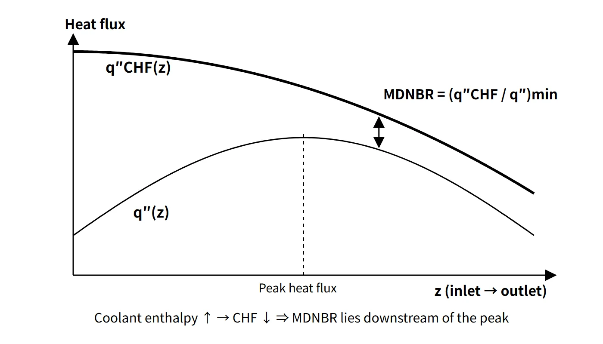

Thermal Hydraulics & Thermodynamics · C-TH-001
DNBR (Departure from Nucleate Boiling Ratio) — Thermal Margin Read as the Minimum of Critical Heat Flux ÷ Local Heat Flux
How the margin to departure from nucleate boiling is defined, calculated, limited at the 95/95 level and protected in operation.
The DNBR (departure from nucleate boiling ratio) is the predicted critical heat flux (q″CHF) at a location divided by the actual local heat flux (q″) at the same location; if its minimum over the whole core (MDNBR) is at or above the design limit of the CHF correlation in use, the fuel rods are assured, at the 95/95 level, not to experience DNB.
This note focuses on how the margin to that phenomenon is managed as a ratio.
Principle and mechanism
Where DNB sits on the boiling curve
As the wall superheat (ΔTe = Twall − Tsat) increases, the heat flux passes through single-phase convection → nucleate boiling → the CHF peak → transition boiling → the minimum film boiling point (Leidenfrost) → film boiling. Representative values for pool boiling of saturated water at 1 atm are CHF about 1.26 MW/m² (ΔTe about 30 °C) and a Leidenfrost point at ΔTe about 120 °C.
A fuel rod is a heated surface whose heat flux is fixed, not its temperature. The moment the heat flux exceeds CHF it skips the transition boiling region and jumps horizontally to the film boiling branch at the same heat flux, and the wall superheat leaps from a few tens of °C to the order of 1,000 °C. When this transition happens in the subcooled to low-quality region, as in a PWR, it is called DNB; when the liquid film dries out in high-quality annular flow, as in a BWR, it is called dryout.
![Left: log-log boiling curve of heat flux against wall superheat through convection, nucleate, transition and film boiling, with the CHF (DNB) point at about 1.26 MW/m² and 30 °C, the Leidenfrost point at about 120 °C, an operating point in nucleate boiling with DNBR shown as the ratio up to CHF, and the horizontal jump to film boiling on a heat-flux-controlled surface. Right: axial profiles over a 3.81 m heated height of local heat flux (peak 1.60 MW/m², DNBR 2.27 at 1.91 m) and critical heat flux decreasing upward, with the MDNBR of 1.93 = 2.66 ÷ 1.38 at z = 2.62 m, 69 % of the height](../../assets/images/concepts/c-th-001-dnbr/fig1-dnbr-boiling-axial.webp)
Equations
- Local DNBR: DNBR(z) = q″CHF(z) / q″(z)
- Minimum: MDNBR = the minimum DNBR over all subchannels and axial positions
- q″CHF comes not from a theoretical formula but from an experimental correlation. Its inputs are local pressure, mass flux G, local equilibrium quality (enthalpy), hydraulic diameter, inlet enthalpy, axial heat flux shape, and spacer grid and mixing vane geometry.
Representative correlations:
- W-3 (Tong, Westinghouse): a uniform-heat-flux correlation multiplied by a non-uniform heat flux correction (F-factor). It is widely known for the traditional limit DNBR of 1.30.
- WRB-1, WRB-2(M): Westinghouse correlations based on tests of fuel assemblies with mixing-vane grids.
- CE-1 for CE-type fuel, and KCE-1 for PLUS7 fuel, used in the thermal design of the APR1400 core.
Why the MDNBR occurs above the peak heat flux
The coolant flows upward and its enthalpy keeps rising, so q″CHF decreases monotonically from bottom to top, while the local heat flux is roughly a cosine with its maximum near the middle. The ratio of the two curves is smallest downstream (above) the peak.
The example calculation in this note (15.5 MPa, G = 3,500 kg/m²s, inlet 290.6 °C, heated length 3.81 m, hot-rod peak heat flux 1.60 MW/m², W-3 uniform-flux form; not design values) gives:
- At the peak location z = 1.91 m: DNBR 2.27
- MDNBR 1.93 at z = 2.62 m (69 % of the height), where q″ = 1.38 MW/m² and q″CHF = 2.66 MW/m²
If the axial power is skewed toward the top (top-skewed), the peak overlaps the high-quality region and the MDNBR drops sharply.
What it means in a plant
Design: SAFDLs and 95/95
The DNBR limit is one pillar of the SAFDLs (specified acceptable fuel design limits); the other is the fuel centerline temperature (managed through linear power density, LPD). Because the limit is set from the distribution of measured-to-predicted (M/P) ratios of the correlation, it is greater than 1. An MDNBR at or above the limit means a 95 % probability, at a 95 % confidence level, that the hot rod does not experience DNB.
Uncertainties in system parameters (pressure, temperature, flow, power, FΔH) are folded into the limit by statistical thermal design methods (Westinghouse ITDP, CE SCU). The numerical limit therefore differs by correlation and methodology. For example, for the APR1400 (KCE-1, SCU) it is 1.29 (μ + 1.645σ, including the rod bow penalty).
DNBR margin
The DNBR margin expresses, as a ratio, the DNB side of the thermal margin. This series uses the following definition by default:
- Margin (%) = (MDNBR − limit) / MDNBR × 100: how much the current DNBR can fall, in percent, before it reaches the limit.
- Another definition, (MDNBR/limit − 1) × 100, is also used, so always state which definition is used.
- For the example MDNBR of 1.93 and a limit of 1.29, the margin is 33.2 % (49.6 % by the other definition).
Influencing factors (when the variable increases)
| Variable increases | DNBR | Reason |
|---|---|---|
| Power, local heat flux | Decreases | Larger denominator; higher enthalpy lowers CHF |
| RCS pressure (operating band) | Increases | Higher saturation temperature → more local subcooling |
| Flow (mass flux) | Increases | Promotes bubble removal and rewetting; smaller enthalpy rise |
| Inlet temperature | Decreases | Less subcooling, higher quality |
| Inlet subcooling margin | Increases | Opposite of inlet temperature |
| FΔH, top skew | Decreases | Larger hot-channel enthalpy rise; peak in the high-quality region |
| Surface roughness | Small effect | Usually a slight increase reported; condition-dependent |
| Non-condensable gas fraction | Decreases | Promotes gas films and bubble formation at the wall |
| Cladding diameter or length (same power) | Increases | Larger heat transfer area lowers heat flux |
| Mixing-vane grids / rod bow | Increases / decreases | Enhanced mixing / narrowed subchannel |
Pressure needs a caveat. At fixed quality, CHF actually decreases with pressure above about 10 MPa. In the PWR operating band, however, a pressure drop reduces subcooling and lowers the DNBR, which is why there is a pressurizer low-pressure trip and a pressure lower limit in the technical specifications.
Monitoring and protection in operation (by reactor type)
- CE type (OPR1000, APR1400): COLSS synthesizes the 3D power distribution from in-core detectors and monitors the DNBR and LPD margins as power margins (alarms). The CPC (digital CPCS in the APR1400) calculates DNBR and LPD in real time from the ex-core detectors, RCS temperature and pressure, and RCP speed, and generates the low DNBR trip and high LPD trip.
- Westinghouse type: DNB protection is provided by the overtemperature ΔT (OTΔT) trip together with the pressurizer low-pressure and low RCS flow trips, and linear power protection by the overpower ΔT (OPΔT) trip. In operation, axial flux difference (AFD), the FQ and FΔH limits, and the technical specification "RCS pressure, temperature and flow DNB limits" are used.
- CANDU: uses a critical channel power (dryout) criterion and the regional overpower protection (ROP) trip instead of DNBR. BWRs use the MCPR.
Related events
A complete loss of flow (all RCPs stopped) is the representative limiting event for DNB. Flow decreases along the inertial coastdown while power is maintained during the trip delay, so the MDNBR minimum occurs within a few seconds. Since this is an AOO, MDNBR ≥ limit must be demonstrated. An RCP shaft seizure is a design basis accident in which the rods below the limit are counted as failed and the dose is evaluated. Other DNB-limiting events include control rod withdrawal and drop, return to power after a main steam line break, and boron dilution.
Regulatory and design criteria
The criteria below are examples from the United States (US NRC).
| Basis | Key point |
|---|---|
| 10 CFR 50 Appendix A, GDC 10 and GDC 20 | SAFDLs not exceeded in normal operation and AOOs; automatic action of the protection system |
| NUREG-0800 SRP 4.4 Rev. 2 (2007) | 95/95 DNBR limit (Acceptance Criterion 1) |
The criteria have evolved. In the 1960s and 1970s a deterministic limit was used (W-3, 1.30). Statistical thermal design then folded the uncertainties into the limit, and today fuel-specific correlations are used, so the limit is correlation-specific (e.g. APR1400 1.29) rather than a fixed 1.30. The 95/95 criterion and GDC 10 and 20 are unchanged.
Easily confused pairs
| DNBR | CPR (MCPR) | LPD (kW/ft) | |
|---|---|---|---|
| Reactor type | PWR | BWR | PWR and BWR |
| Phenomenon | DNB (subcooled, low-quality CHF) | Dryout (film depletion at high quality) | Pellet centerline melting |
| Definition | q″CHF/q″ (local ratio) | Critical power / actual rod power | Local linear power |
| Related peaking factor | FΔH (enthalpy rise) | Local power and quality | FQ (local peak) |
| CE-type protection | CPC low DNBR trip | — | CPC high LPD trip |
CHF is the phenomenon (a heat flux value); DNBR is the ratio of that value to the local heat flux.
Key points at a glance
- Definition: DNBR = q″CHF(z)/q″actual(z); the core minimum is the MDNBR.
- DNB: nucleate boiling → vapor film forms → heat transfer coefficient collapses → cladding temperature jumps on a heat-flux-controlled surface (the CHF peak of the boiling curve).
- CHF calculation: experimental correlations (W-3, WRB, CE-1, KCE-1) as functions of pressure, mass flux, quality and geometry.
- Design limit: a SAFDL; MDNBR ≥ limit means 95 % probability at 95 % confidence of no DNB (e.g. APR1400 1.29).
- Location: enthalpy rise lowers CHF → the MDNBR lies downstream (above) the peak heat flux.
- Margin: (MDNBR − limit)/MDNBR × 100 %.
- Influencing factors: power, inlet temperature, FΔH up → DNBR down; pressure, flow up → DNBR up.
- Monitoring and protection: CE type COLSS (monitoring) and CPC (low DNBR trip); Westinghouse OTΔT trip.
- Limiting events: complete loss of flow, RCP shaft seizure, control rod withdrawal.
